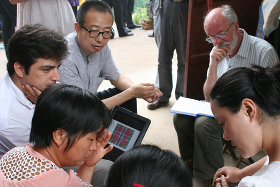

JUL
07
2013
潘鲁生院长与人类学家罗伯特•雷顿教授座谈

在山东传统手工艺传承方式调研活动中，山东工艺美术学院院长潘鲁生与我校“文化人类学研究所”所长、艺术学泰山学者岗位骨干研究员、原英国杜伦大学人类学系主任罗伯特•雷顿教授举行座谈。我校研究生处处长董占军教授，杜伦大学人类学专家杰米•特瑞尼教授参与座谈。双方共同讨论了开展艺术人类学课题研究、研究生人才培养等有关议题。
雷顿教授介绍了在梁山、鄄城等地调研传统手织花布工艺传承的进展情况。雷顿表示，手工艺文明是人类文明的重要传统，现代人不仅要理解和尊重传统手工艺，也 应该让蕴含在手艺文化系统中精神能够得到保留和传承。个人期待与山东工艺美术学院学院的研究合作能够深入开展，寻找手艺在现代人生活中的发展空间。
潘鲁生院 长对雷顿先生的观点表示认同。他说，雷顿先生以艺术人类学视角开展的传统手工艺调研，为山东工艺美术学院学术团队的研究带来了新的方法和思路。目前，中国 正处在加速城镇化的进程中，传统村落以及依附在村落文化中的传统手工艺等非物质文化遗产的发展也处于不利的境地。当下中国语境下的手工艺发展研究对于文化 传承具有重要的现实意义，已成为一项重要的学术命题。希望雷顿先生的人类学研究能够为中国手工艺的发展出路提供更多学理的支持，促进这项事业能够健康的发 展下去。
董占军教授与雷顿先生就山东工艺美术学院艺术人类学学科建设、研究生人才培养、共同开展学术课题研究等问题进行了商讨，双方在合作方式上达成了一致意见。
活动开始前，潘鲁生院长与雷顿教授共同完成了鄄城常楼村等村庄手工织花布工艺的调研。